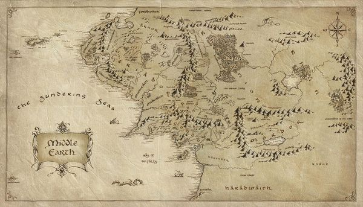
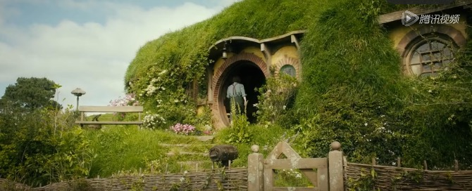
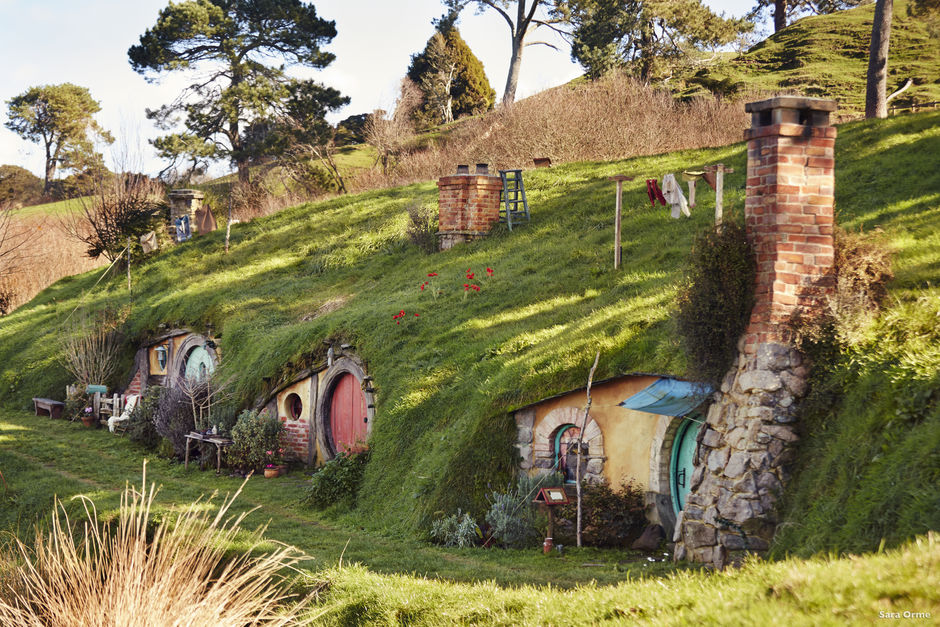
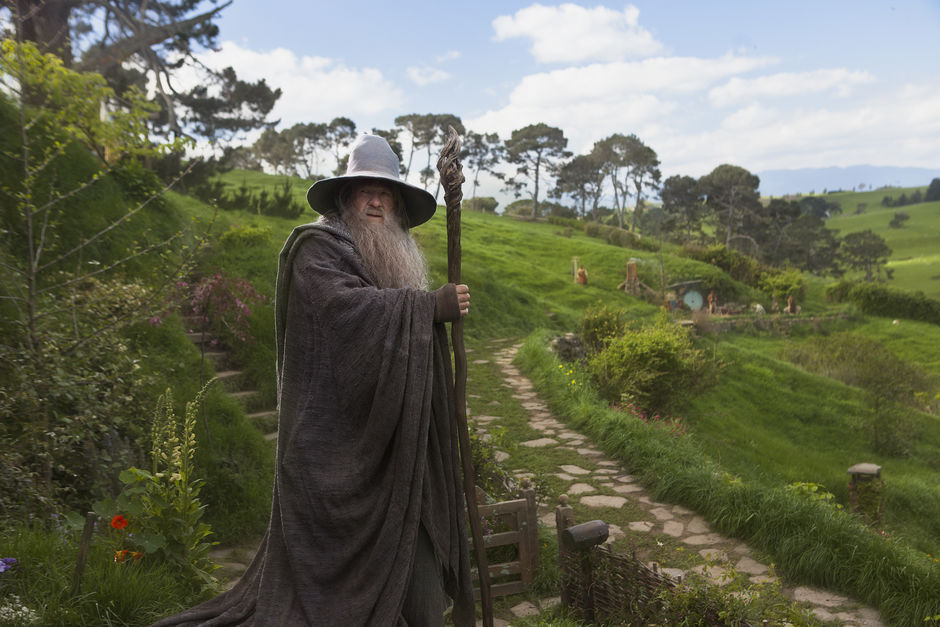
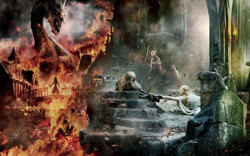

Bilbo, a hobbit-lover of easy living, was enjoying himself in his hobbit-hole at bag's bottom.
But, he was involved in a journey to the lonely mountain, a treasure trove of dwarves, which was occupied by the dragon
Smaug.
Thanks to
Gandalf, the grey-robed wizard,
Bilbo unexpectedly joins the adventures with 13 dwarves.
Chanting the old ballads, the thirteen dwarves dragged
Bilbo into the adventure.
In this "unexpected journey", they face thousands of goblins, orcs, deadly garou knights and giant spiders, shapeships and wizards.
Although the team's destination was the
Lonely Mountain, they had to escape from the goblin tunnel first.
Here
Bilbo, meets
Gollum, and the strange creature who changed the rest of his life.
In an underground the shore of the lake, a modest
Bilbo found not only of his cunning and courage, also get a ring from
Gollum, - this is the golden simple ring, will change the fate of all of
Middle-Earth...